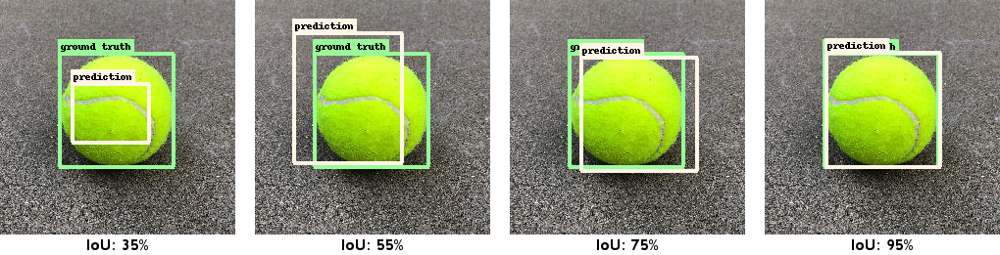

Advanced Usage
This page describes evaluation metrics in more detail as well as how to deploy your detector to an iOS or macOS app using Core ML.
Evaluation
If you hold out ground truth data before model creation, you can use it for quantitative model evaluation. You can do this by splitting your ground truth data:
import turicreate as tc
train, val = data.random_split(0.8)
model = tc.object_detector.create(train)
scores = model.evaluate(val)
print(scores['mean_average_precision'])0.23121281Note, if we run the evaluation on train, it will get a significantly higher
score and not be representative of how the model will perform on new data.
Let's discuss how to interpret the score 23.1%. As we describe how this metric
is calculated, you will realize why it is hard to get a high score. As a
result, you might find that a value of 25% mAP represents a more predictive
model than it may sound.
First, we need to define what a correct prediction is. Your model will unlikely give a bounding box that corresponds to the ground truth perfectly, so we need a measurement of how close we are. For this, a score called intersection-over-union (IoU) is used. It is a value between 0% (no overlap) and 100% (perfect overlap). Here are a few examples:

For a prediction to be considered correct, it needs to have the correct class label and an IoU score against the ground truth that is greater than a pre-determined threshold. As you can see in the examples, if a precise localization is not critically important, then a threshold of 50% may be suitable. If two or more predictions have an IoU greater than the threshold, only one gets designated as correct (true positive, TP) and the rest as incorrect (false positive, FP). Ground truth bounding boxes that were completely ignored by the model are also considered incorrect (false negative, FN).
Based on these three types of predictions (TP/FP/FN) we can compute precision and recall scores. However, before we do this, remember that the model also associates each prediction with a confidence score between 0% and 100% (remember the prediction image with two dogs). We use this by considering a confidence threshold and rejecting predictions if they fall below it prior to computing TP/FP/FN. Instead of setting this threshold manually, we calculate scores for all possible thresholds and plot the resulting precision and recall for each threshold value as a curve. The average precision is the area under this precision and recall curve. This metric is calculated per object class and averaged, to compute mean average precision (mAP).
Remember that we had to decide an IoU threshold to compute this metric. Setting
it to 50% is what we call mean_average_precision_50 (popularized by the PASCAL
VOC dataset). Use this score if precise localization is not
important. However, if precise localization is desirable, then this metric may not
differentiate between a model with sloppy and a model with precise
localization. As a remedy to this, our primary metric averages
the mAP over a range of IoU thresholds between 50% to 95% (in increments of 5
percentage points). We call this simply mean_average_precision (popularized by the
COCO dataset). A model that evaluates to 90% mAP at 50% IoU threshold
may only get 50% mAP at varied IoU thresholds, so the mean_average_precision metric tends
to report seemingly low scores even for relatively high quality models.
Stacked annotations
Predictions are returned in the same format as ground truth annotations. Each row represents an image and the bounding boxes are found inside a list. We call this format unstacked. It can be useful to inspect annotations (predictions or ground truth) in a stacked format, where each row is a single bounding box. We provide functions to convert between these two formats:
predictions = model.predict(test)
predictions_stacked = tc.object_detector.util.stack_annotations(predictions)
print(predictions_stacked)+--------+------------+-------+---------+---------+--------+--------+
| row_id | confidence | label | x | y | height | width |
+--------+------------+-------+---------+---------+--------+--------+
| 0 | 0.723 | dog | 262.220 | 155.497 | 73.928 | 90.453 |
| 0 | 0.567 | dog | 85.079 | 237.647 | 82.300 | 96.486 |
+--------+------------+-------+---------+---------+--------+--------+You can also convert back to unstacked:
unstacked_predictions = tc.object_detector.util.unstack_annotations(
predictions_stacked,
num_rows=len(test))This gives you the option to arrange ground truth data in stacked format and
then convert it to unstacked. The option num_rows is optional and is only
necessary if you have true negative images that are not represented in the
stacked format. The returned SArray unstacked_predictions will be identical
to predictions.